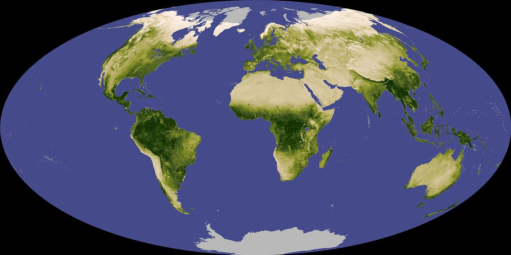
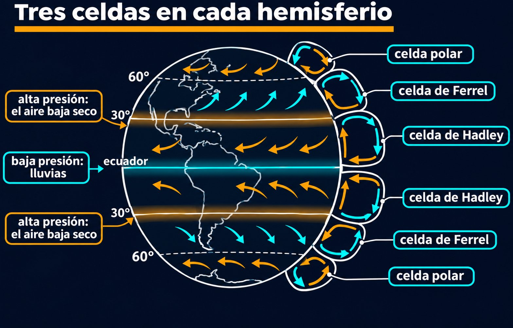

La circulación general: por qué hay desiertos a 30° de latitud
Mirá un globo terráqueo: el Sahara, los desiertos de Australia, el sudoeste de Estados Unidos y México caen cerca de la misma latitud, unos 30° [1]. No es casualidad. Esa franja seca es la parte visible de una circulación gigantesca, que lleva aire desde el ecuador hasta los subtrópicos y lo deja caer.

Cerca del ecuador, la convección tropical profunda levanta el aire en la zona de convergencia intertropical [2]. Al llegar a la tropopausa, la fuerte estabilidad frena su movimiento vertical, y el aire empieza a migrar hacia el polo [2]. En los subtrópicos desciende, y vuelve hacia el ecuador cerca de la superficie [2]. Esa rueda es la celda de Hadley, nombrada por George Hadley, que en 1735 propuso una sola circulación para cada hemisferio [1].
Donde el aire baja, se forma una banda de alta presión, alrededor de los 30° [1]. Y la alta presión suele ir con tiempo seco y caluroso [1]. El aire que desciende ya dejó su humedad en las lluvias tropicales (un razonamiento propio), y al bajar se comprime y se calienta [3]: es aire que seca, no que llueve. Del otro lado de la rueda, el ascenso en el ecuador da las lluvias de los trópicos.
Una esponja que se exprime y un secador: el aire tropical sube cargado de agua y se exprime al enfriarse en las tormentas. Después baja seco y calentándose, como el aire de un secador de pelo, sobre la franja de los 30°.
Hadley imaginó una circulación que iba del ecuador al polo. La Tierra no lo permite, y la razón es la rotación. Geoffrey Vallis presenta un modelo simple, siguiendo a Schneider y Lindzen (1977) y a Held y Hou (1980), con una suposición central: el aire que viaja hacia el polo en altura conserva su momento angular respecto del eje de la Tierra [2].
Al alejarse del ecuador, ese aire se acerca al eje. Como un patinador que recoge los brazos, gana velocidad hacia el este. Si sale del ecuador sin viento relativo, conservar el momento angular da:
A 30° eso da unos 134 m/s, más de 480 km/h, y crece muy rápido más allá (un cálculo propio con esta fórmula). Un viento así no puede sostenerse hasta el polo, y algo tiene que cortar la celda antes. El modelo predice además que el ancho de la celda es inversamente proporcional a la rotación del planeta [4]: en un planeta que gira lento, las celdas llegan mucho más lejos hacia el polo; en uno que gira rápido, quedan confinadas cerca del ecuador [4].
Tres explicaciones, ninguna definitiva: ¿qué termina la celda exactamente? Vallis presenta tres posibilidades: restricciones termodinámicas, el inicio de la inestabilidad baroclínica y la ruptura de ondas de Rossby. Y agrega que casi seguramente ninguno de esos modelos describe la celda real más que de manera aproximada, lo que no significa que no sean útiles [2]. Es un buen recordatorio: que una explicación sea clara no significa que esté cerrada.
Cerca de los 30° corre en altura el chorro subtropical [5]. Más allá empieza el dominio de la corriente en chorro y de los remolinos de las latitudes medias, y la celda de Ferrel [1]. Las celdas son un promedio: mes a mes la circulación puede ser muy asimétrica, y la rama de verano es distinta de la de invierno [4].

Los desiertos de los 30° son la marca en el suelo de una circulación global. El aire sube húmedo en el ecuador, viaja por la altura y baja seco en los subtrópicos. La rotación de la Tierra impide que llegue más lejos: al conservar el momento angular, el aire se aceleraría hasta velocidades que no se sostienen. Por qué la celda termina justo donde termina sigue siendo un problema con varias explicaciones parciales.
Pregunta para la comunidad: No todo lo que está a 30° de latitud es desierto: Buenos Aires, a unos 35°, no lo es, y el sudeste de China tampoco. ¿Qué factores, además de la celda de Hadley, deciden cuánta lluvia recibe un lugar?